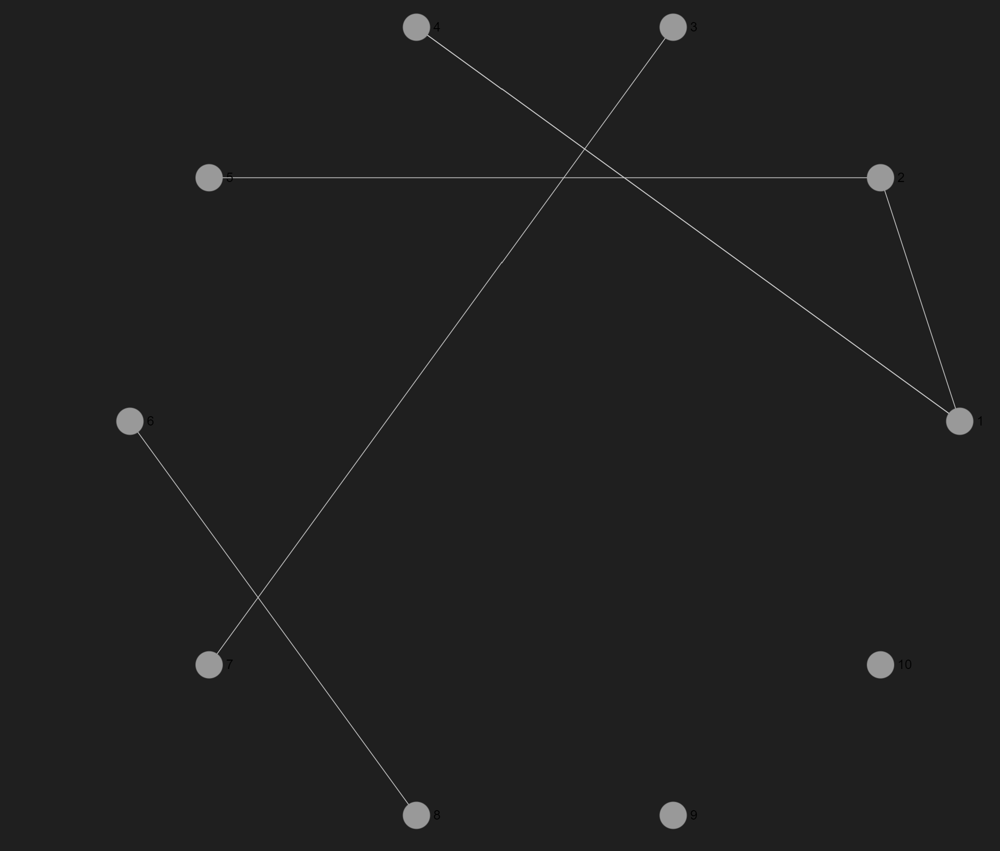
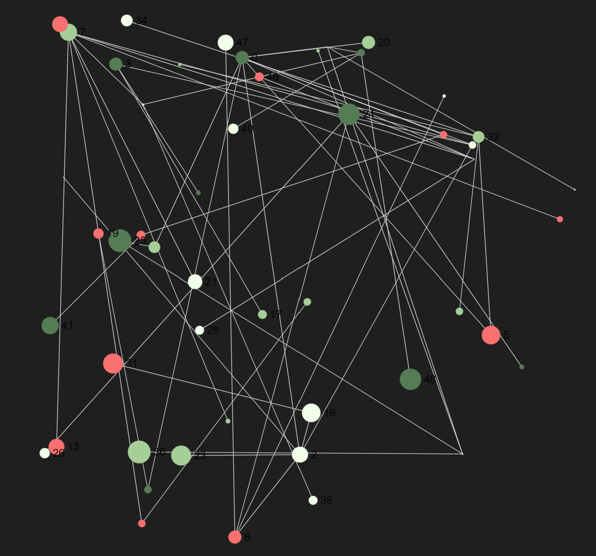
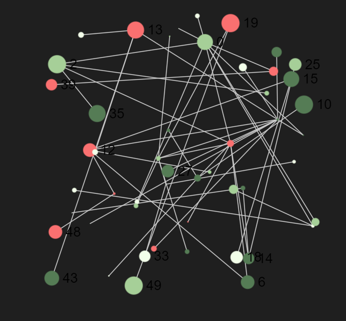
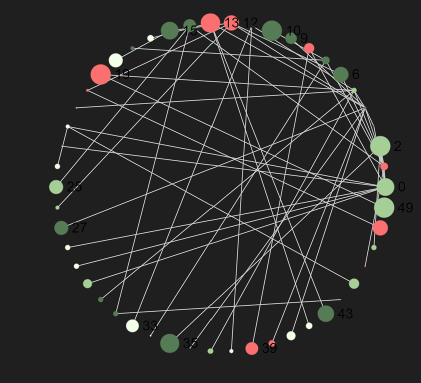
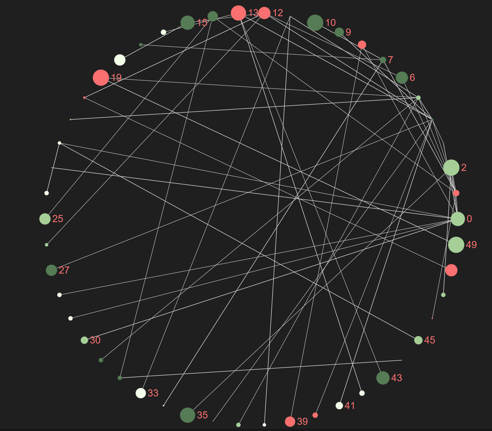
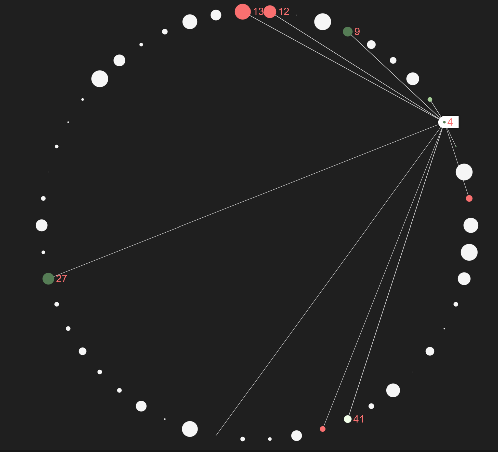

Advanced Usage
Installing the required Librarys
//SigmaGraph.NET and SigmaGraph.NET.Interactive
# "nuget: C:/Users/lukas/Documents/GitHub/Project/SigmaGraph.NET/pkg"
#r "nuget: SigmaGraph.NET, 0.0.0-dev"
#r "nuget: SigmaGraph.NET.Interactive, 0.0.0-dev"
//Additional Librarys
#r "nuget: DynamicObj, 2.0.0"
#r "nuget: Newtonsoft.Json"
#r "nuget: Giraffe.ViewEngine, 1.4.0"
open SigmaGraph.NET
open SigmaGraph.NET.Interactive
open System
open DynamicObj
open Newtonsoft.Json
open Giraffe.ViewEngine
Adding multiple nodes at once
This code cell demonstrates how to create a graph with a sequence of nodes and edges. First, a sequence of nodes is generated, each initialized with a unique identifier and display attributes such as label and size. Similarly, a sequence of edges is created to connect specified pairs of nodes.
An empty graph is initialized with VisGraph.empty(). The sequences of nodes and edges are added to the graph using VisGraph.withNodes and VisGraph.withEdges, respectively. Additionally, a circular layout is applied to the graph using VisGraph.withCircularLayout to arrange the nodes in a circular fashion.
//Create a Node-Sequence, in this case a list but you can also use other sequence types like arrays or just a sequence
let nodesToAdd = [1..10] |> List.map (fun x -> Node.Init(string x, DisplayData.Init(Label = string x, Size= 15)))
// Creating an Edge Sequence
let edgesToAdd = [1,2; 2,5; 7,3; 1,4; 8,6; 4,1] |> List.map (fun (x,y) -> Edge.Init(string x,string y))
// Add the nodesequence and edgesequence to an empty graph
VisGraph.empty()
|> VisGraph.withNodes(nodesToAdd) // add the node sequence
|> VisGraph.withEdges(edgesToAdd) // add the edge sequence
|> VisGraph.withCircularLayout() // choosing the desired Layout

Creating complex Networks and using other Librarys together with SigmaGraph.NET
This code cell demonstrates how to create a graph using the Graphoscope and SigmaGraph.NET package and visualize it.
First, the Graphoscope package is referenced and imported. Various parameters are defined, including a set of colors for node display and randomization settings. A random graph is then generated using the Bollobas-Riordan model with specified parameters.
An empty graph is initialized with VisGraph.empty(). Nodes are added to the graph, each node being assigned a random size, color, and label based on the random graph generated. Similarly, edges are added, each edge connecting nodes with a randomly determined size.
The result is exampleVisGRaph, a graph populated with randomly generated nodes and edges, ready for visualization.
// Reference the Graphoscope package
#r "nuget: Graphoscope, 0.4.0"
open Graphoscope
open Graphoscope.RandomModels
// Define colors for nodes
let colors = [|"#F2FFE9";"#A6CF98";"#557C55";"#FA7070"|]
// Initialize parameters for the graph model
let N = 50
let rnd = new Random()
// Create a random graph using the BollobasRiordan model
let myBollobasRiordan = RandomModels.BollobasRiordan.initDirectedFGraph N 0.5 0.1 0.4 0.6 0.4 FGraph.empty
// Add nodes
let exampleVisGRaph =
VisGraph.empty()
|> VisGraph.withNodes[
for node in myBollobasRiordan do
yield Node.Init(key=string node.Key, DisplayData=DisplayData.Init(Size=rnd.Next(1, 18), Color=colors.[rnd.Next(0, 4)], Label=string node.Key))
]
//Add edges
|> VisGraph.withEdges[
for node in myBollobasRiordan do
let pred, t, _ = node.Value
for kv in pred do
yield Edge.Init(source=string kv.Key, target=string t, DisplayData=DisplayData.Init(Size=rnd.Next(1, 3)))
]
exampleVisGRaph

Layouts
Random Layout
This code applies a random layout to the exampleVisGRaph, arranging the nodes in a random configuration for visualization.
exampleVisGRaph
|> VisGraph.withRandomLayout()

Circular Layout
This code applies a circular layout to the exampleVisGRaph, arranging the nodes in a circular pattern for visualization.
exampleVisGRaph
|> VisGraph.withCircularLayout()

Render settings
There are many differend render settings you can choose from. You can use this to define a set of render settings before visualizing your graphs to have a homogenous outcome if you are visuallizing multiple graphs. More on render settings can be found in the section "Render settings".
This code configures the exampleVisGRaph with a custom renderer, setting the label size to 20 and the label color to #FA7070 for visualization.
exampleVisGRaph
|> VisGraph.withRenderer(Render.Settings.Init(LabelSize = 20, LabelColor=Render.ColorOrReference.Init(Color="#FA7070")))

Hover selector
The hoverselector is a powerfull tool that allows you to keep an overview over big graphs as it lets you hover over each node and see the edges it is part of. This code adds a hover selector to the exampleVisGRaph, enabling interactive hover effects for nodes and edges during visualization.
//Adding the HoverSelector option to our graph
exampleVisGRaph
|> VisGraph.withHoverSelector()

module List from Microsoft.FSharp.Collections
--------------------
type List<'T> = | op_Nil | op_ColonColon of Head: 'T * Tail: 'T list interface IReadOnlyList<'T> interface IReadOnlyCollection<'T> interface IEnumerable interface IEnumerable<'T> member GetReverseIndex: rank: int * offset: int -> int member GetSlice: startIndex: int option * endIndex: int option -> 'T list static member Cons: head: 'T * tail: 'T list -> 'T list member Head: 'T member IsEmpty: bool member Item: index: int -> 'T with get ...
val string: value: 'T -> string
--------------------
type string = String
type Random = new: unit -> unit + 1 overload member GetItems<'T> : choices: ReadOnlySpan<'T> * length: int -> 'T array + 2 overloads member Next: unit -> int + 2 overloads member NextBytes: buffer: byte array -> unit + 1 overload member NextDouble: unit -> float member NextInt64: unit -> int64 + 2 overloads member NextSingle: unit -> float32 member Shuffle<'T> : values: Span<'T> -> unit + 1 overload static member Shared: Random
<summary>Represents a pseudo-random number generator, which is an algorithm that produces a sequence of numbers that meet certain statistical requirements for randomness.</summary>
--------------------
Random() : Random
Random(Seed: int) : Random
Random.Next(maxValue: int) : int
Random.Next(minValue: int, maxValue: int) : int